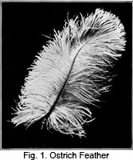

1928—The New-Way Course in Millinery and Hat Design
Lesson 11—Ready-Made Trimming
Ready-Made Trimmings
On the Subject of Trimmings
So fascinating is the subject of millinery trimmings and so vast in its possibilities, that volumes could be written on the subject. There was a time when the art of trimming in millinery meant merely a touch of fancy work on a hat—a touch of hand embroidery, a beaded motif, a flower or wing attached to the crown. But today millinery trimming means infinitely more; it embraces every law of art, symmetry and harmony; every law of color, line and form.
When we speak of trimming now, we do not mean solely the delicately-colored flowers that we arrange in attractive manner around the hat, or the frail golden threads of a motif design, or the jet and jade ornaments which are Fashion's pets. Trimming today concerns itself also with the artful arrangement of drapery, with the blending of well-chosen colors, with the achieving of a true expression of art.
Trimming a hat does not necessarily require the aid of Fashion—although Fashion usually determines the type of trimming. One may use a bit of antique tapestry, or old-fashioned cross-stitch work, or even an old, cherished Bird of Paradise. But if the trimming is set at just the right angle, if the colors blend in perfect harmony, if the symmetry is correct, the trimming will be modern in its chic smartness.
Milliners the world over have been particularly clever in creating new trimming innovations and many have proven extremely deft and artistic in the arrangement of material draperies, in the placing of motifs, in the artful conception of trimming ideas. It is to the eternal credit of the men and women who have devoted their talents to the designing and making of hats, that millinery has advanced more in the last twenty years than during any other period. By "advanced" we mean that the styles have become more sensible and attractive, color harmony has made a most pronounced stride forward, trimming mediums have increased tenfold.
The ordinary interpretation of "trimming" in millinery is something to "dress up" the hat—perhaps a bit of something colorful, a fancy, or a feather. But the wise milliner knows that she can take something commonplace, like a beaded design, or a feather, or a bow, and with it create a trimming that will be a work of art. This subject will be covered completely a little later in the course. You will be taught enough about design in millinery to enable you to transform the commonplace into the artistic and beautiful. But for the present, while you are still in the embryonic stage of millinery art, let us just consider the types of trimmings and when they are used.
Feather Trimmings
The vogue for feathers on milady's hat, which increases with one season and decreases in another, has created an industry of surprising proportions. Bird-farming, it is called, and it consists of the deliberate growing of feathers for millinery purposes. Of course it is not the feathers that are grown—but the birds which supply the feathers. Think of being able to go out into one's back yard and gathering just the size or shade of feather one wishes for the new Spring, Summer or Winter hat!
The lure of pheasant-raising is very dear to the feather fancier's heart. He takes great pride in the exquisitely colored feathers, the fine, delicate flues. The ideal time for "pulling" feathers that are to be sold is June or July. At this time the plumage is prime and the bird has not yet begun to shed. If the wing feathers of the pheasant are to be used, they are drawn in October.
The feather has to go through a great many processes, of course, before it is ready for milady's hat! Women are more deft than men in the use of dyes and bleaches, and at many of the large bird-farms women are employed for this purpose. When the feather emerges from their hands, it is indeed a thing of rare beauty—and a rich trimming for one's best hat.
When Feathers Were First Used in Millinery
There was a time when feathers were unheard of as trimmings of any kind. The first instance we know of when a feather of any kind was used as headgear was when a certain Scotch clan used tiny tips of ostrich feathers in their caps to distinguish themselves from other clans. This was about four centuries ago.
About three centuries ago, feathers began to be used extensively on the hats of men. Women did not wear them at all, and in fact, they were not allowed to wear them at first! Tradition tells us that the feather was a sign of masculine strength—and what strength had a mere woman!
Finally we find that the feather has taken an entirely new place in the scheme of things. The milliner has finally claimed the feather as her own—and now we find the use of the feather headdress confined solely to women. Of course there are certain military organizations that favor the feather for men—but they usually limit themselves to the ostrich feather alone.
And so, the feather constitutes an important feature in millinery trimming, and we will study each type of feather individually.
The Feathers of the Ostrich
The ostrich plume is probably the prettiest type of feather used in millinery. Ostrich-farms in the United States and South Africa supply the plumes which are clipped every six months. The feathers from the male ostrich are finer than those of the female; they are black or white in color, while those of the female are a greyish brown.
The single plume is used very rarely for a trimming. The full, thick ostrich plume is made up of one feather of which the quill is perfect, built up underneath with less perfect feathers to give the required weight. The feathers are bleached and dyed, then starched, and finally curled.
It is important that ostrich feathers be kept out of damp places, for dampness has the tendency to take out the curl. When stored, they should be placed in a dry spot, not against a brick wall, and carefully protected from light and air.
Sometimes uncurled ostrich feathers are used. Sometimes Fashion will have a whim—and for a whole season nothing but uncurled ostrich feathers will be worn. They are prepared in many attractive ways. They may be used on dressy hats and on tailored hats. By observing styles each season you will be able to get many more valuable and up-to-date ideas than could possibly be given in this course. (Fig. 2.)
Many fancies are made of ostrich feathers—and sometimes a whole hat is covered with the feathers. The willow plume which was so extremely popular at one time, was made of ostrich feathers. The perfect feather of unusual length was chosen for the foundation, and on it was grafted the fibres or flues of other feathers as a filling. The feather, when finished, is extremely wide and "willowy" as extra flues are tied to the ends of the original flues—sometimes as many as three being joined together.
The Amazon plume is also used when Fashion has a whim. It is a long plume, so curled that the entire stem is hidden. The lobster plume is so called because the stem is so bent that it encircles the hat, and the underside of the feather shows on the outside.
Some of the newer fashions in millinery decree that just the tips of the ostrich feather shall be worn—two or three of the graceful tips grouped into one charming trimming. The tips may be all of one color, or the colors may be different but of harmonizing shades.
Ostrich feathers are sometimes treated with a coating of glycerine to make what is known as the glycerine feather. (Fig. 3.) Ostrich feathers are also treated with acid baths which burn away the fibers on the flues and make the feathers lighter and airier. This type of feather is called the spumed feather, and sometimes the burnt ostrich.
Applying Ostrich Feathers
The ostrich feather is most appropriate for the mature woman, but only when the tips are used, the trimming is an ideal one for the young woman. Even children's hats are sometimes trimmed with ostrich tips. Burnt ostrich is a youthful trimming, and is becoming to youth and age alike.
To apply ostrich plumes and tips gracefully is in itself an achievement. We strongly advise that you study an assortment of ostrich plumes in various lengths and modes of curl and notice how they are arranged on various types of shapes. In this way you will not only make yourself familiar with the many types of ostrich plumes, but also with the manner of application which is most suitable to the type of shape used.
Feathers should not be applied to a hat so that they sprawl in every way and whirl out of place at the least breath of wind. The feather should follow as closely as possible the lines of the hat, or should at least be in harmony with the lines. If the feather is at an angle, it should be at such an angle that adds to the beauty of the effect rather than creates simply a bizarre appearance and so detracts from the beauty. And if the feather does not follow the line of the hat it should most certainly follow the line of the face and figure of the wearer. Otherwise there will be no harmony—and without harmony there can be no beauty.
If you wish to apply the feather in such a way that is cannot retain its pose without some support, you may have recourse to wires. You may sew a fine, firm wire to the underside of the quill, but be sure that the wire matches the plume as closely as possible. Cut the wire before reaching the tip or head so that this part may fall softly and loosely. Secure the wire firmly to the stem at the root of the feather by twisting tie wire around it. The wire should be secured to the quill with small buttonhole stitches.
When wired in the manner above explained, the ostrich plume can be curved in any way desired—and it will keep its curve despite the angry attempts of the wind to blow it out of place.
Always pin a feather in place, before stitching it permanently. Experiment until you acquire the best and most becoming angle, then "anchor" by taking stitches over the quill.
Wings and Trimmings That are Made of Feathers
There are two types of wings—the natural and the manufactured. The made or manufactured wings are of many styles and shapes and change with every season. They are made of feathers glued on foundations. They are very much more fragile than the natural wings. For this reason they are usually wired on the under side (if they are used flat) with fine, strong wire in such a way that the wire does not show yet is around almost the entire outline of the feather to protect it.
Natural wings, and other ornaments made of feathers are made from the feathers of the barnyard fowls. There was a time when thoughtless women wore the beautiful plumage of certain wild birds which have become almost extinct because of the ruthless destruction on the part of hunters in quest of the valuable feathers. Laws have been enacted which prevent the killing of our beautiful wild birds for their plumage, and women must now content themselves with the feathers of birds that are killed for the purpose of food, such as the goose, the guinea fowl, the turkey, duck and chicken. Of the wild fowl, the feathers of the pheasant, prairie hen and a few others may be used.
Among the wild birds that have become almost extinct is the egret—a beautiful bird with a pathetic history. At one time the egret was plentiful. In South America the woods were made beautiful by these graceful birds with their long exquisite feathers. But hunters soon realized the value of the egret's feathers as a hat ornament, and there began a ruthless destruction of the birds which is a disgrace to the history of the American hat industry. Women were ecstatic when they saw the slender, graceful feathers and, of course, no woman was happy until she had one. Hunters were kept busy killing the gentle birds, until their extinction was threatened.
You see, it is only at nesting time that the egret's feathers are in their prime—and therefore suitable for millinery purposes. It was at nesting time, therefore that the hunter killed the mother egret who dared not fly to safety and leave her young to the mercies of the enemy. That is what makes the story so pathetic. Not only did the hunter kill the egret, but he deprived the newly-born birds of their mother and they, too, died of slow starvation.
Slowly the egret neared extinction, until finally a few far-sighted persons realized what was happening and took the matter into their own hands. They had laws enacted which made the killing of the egret and the selling of the feathers, illegal, and no one may kill the bird today without fitting punishment.
The feathers of the barnyard fowl, therefore, are used where the egret was used before. These feathers are treated to make them sanitary, then dyed, and finally manufactured into such wings and ornaments as Fashion decrees for the season. Net is used as a foundation for the wings and ornaments, it is wired and made into any shape desired. The feathers are then glued in place. It is a wise plan to covet feather wings and ornaments with maline when they are new, to prevent the feathers from becoming loosened.
Breasts of birds are used extensively on hats for elderly women. These too may be natural, or manufactured. In using made breasts, one should take great care in sewing as the thread may break off the tiny feathers and so spoil the breast. It is best to cover the breast with maline before attaching to the hat.
One of Fashions latest whims are flowers made entirely of feathers. Hand-bags and slippers are even being made now of tiny carefully matched feathers! Feather flowers may be purchased ready-made, or made at home.
Quills
A quill is a single feather taken from the end of the wing or tail of the bird. There is an unlimited variety of quills which can be used for millinery purposes, but the supply in America is limited as certain kinds of quills are barred. The United States produces very few kinds, but those that are available are attractively colored and entirely satisfactory. There is enough of a variety to satisfy the most eager milliner.
In handling quills, always sew the end of the quill firmly. Great care should be taken not to split the fine, delicate flue as this will ruin the quill. This type of trimming offers excellent opportunities for color contrast; one may use a red quill on a black hat, or a black quill on a red hat—always remembering that harmony must be observed even in contrast.
In millinery, peacock feathers are used as a quill. The supply of these fine, delicately-colored quills is limited and those that are obtainable are as expensive as they are pretty. Pheasant feathers are sometimes used as quills, too, and they are often extremely attractive. They are very much less expensive than peacock feathers.
Young people can wear quills to the best advantage, although they are not inappropriate for the mature woman. The angle at which the quill is applied is very important if one wishes the right degree of smartness and the student is advised to practice and experiment until she can apply a feather or quill deftly, smartly and attractively.
One thing more before leaving the subject of feathers: Ostrich feathers, arid certain other kinds, are very apt to lose their curl if exposed to dampness. To restore the curl, obtain a regular feather curling knife with a curved blade and handy wooden handle. First shake the feather for a few minutes over heat, or allow it to hang for a few moments in intense sunlight (but not too long as the color will fade) and then proceed in this manner. Beginning at the top, take three or four of the fronds between the edge of the knife and the thumb and draw out slowly. Let the pressure be light from the quill to near the end, then press more firmly. Thus the ends will be turned under and the curl restored.
Ribbon Trimmings
Many women are naturally deft in the handling of ribbons and can quickly transform a piece of ribbon into a charming, artistic bow or loop. But that is no reason why everyone cannot learn to do this. It is just as easy to learn how to handle ribbon and ribbon trimmings as it is to learn how to sew braid, or cut a frame.
In ribbon work, your slogan should be "practice makes perfect". This is very, very true. The more you practice—even if it is just with scraps of ribbon—the more deft and quick you will become. Each year new ribbon trimmings are in vogue, and the knowledge of how to use ribbons and how to make ribbon trimmings will prove very valuable to you.
First in importance, of course, is being able to select ribbons wisely. You must be able to judge quality; to know whether a certain kind of ribbon is appropriate for the hat you have in mind. Price does not always denote quality, and you should be able to judge quality regardless of price. This is something that comes from practice and experience, but here are some suggestions that may help you.
Ribbons are woven as silks are. When the ribbon is of good quality, there will be a cord at the edge, while poor quality ribbon will have a flat finish. This cord gives strength and is a sure indication of quality.
Weighted ribbon does not wear well, and the milliner should be able to recognize weighted materials at once—ribbons included. Weighted ribbons will crack after being worn a short while. Satin should always be of the best grade obtainable, as the poorer grades of satin roughen easily and lose their sheen.
Velvet ribbons come in many colors, including black and white. Not so many years ago, it was difficult to buy velvet ribbons in the beautiful shades that are now available. Always be sure that the back of the ribbon is satin-finished if it is to be used in loops or bows. But if the velvet ribbon is to be used flat against the hat, it may be cotton-finished in the back.
Milliners are today offered splendid trimming possibilities in the new brocade ribbons. These ribbons come in very beautiful colors and handsome effects, and are as effective on hats as they are on dresses.
Weaves and Designs in Ribbons
Ribbons are woven in stripes, plaids or other designs, and sometimes they are printed. The better grades of ribbon are warp printed. This is done after the warp has been put in the loom, and is done on the warp only. After the ribbon is woven, these figures show up in hazy outline and beautiful soft tones.
In cheaper ribbons the designs are on the surface and are more harsh and prominent. Designs are woven in ribbons just as they are in silks, a great many ribbons being of the attractive Jacquard design.
Some seasons find the changeable silk ribbon enjoying wide popularity. This is a ribbon woven with a warp of one or two colors and a weft or filling of another color. This produces a most charming changeable effect.
Ribbon is sometimes made with a picot edge and is popular both for millinery work and dressmaking purposes. It is finished at the edges with a heavy cord forming a picot, or looped effect. Gauze ribbon is sometimes used by florists; it is made of spun silk and often in gold or silver metal. The metal ribbons are used for evening hats and to trim evening gowns.
Ribbon as a Trimming
The study of ribbon-trimming in millinery is an extensive one— but it is as fascinating as it is extensive. Each season there are grosgrain ribbons, ribbons of taffeta, faille, satin and velvet, ribbons in all different patterns and designs. Only by following the season's styles and by studying the various types and qualities of ribbons, can one hope to become proficient in the selecting of good quality, dependable, appropriate ribbons for the purpose of trimming hats.
In millinery, ribbons are used for making bows, plaitings, shirrings, tailored ornaments, bands, draperies, streamers and flowers. Sometimes a complete hat is made of ribbon. And sometimes wide ribbons are used for hat crowns. Narrow grosgrain ribbon can be used as a braid and made into an entire hat.
Ribbons can be made up into beautiful flowers and floral designs. This subject is covered in detail later in the course. You are taught how to make a variety of handsome flowers including roses, ribbon violets, petals, leaves and many other important types of millinery trimming. You are taught exactly how to make the flowers so that you may duplicate some smart little Parisian model that tempts you in some shop window!
By observing well the kinds of ribbons used on various kinds of hats, the student will learn a great deal that will be helpful to her. She will find out, among other things, that satin makes the most appropriate ribbon for trimming children's hats, that grosgrain ribbon is ideal for trimming tailored hats, and that velvet ribbon is becoming to the elderly woman. Each season brings new uses for old ribbons, and new ribbons for old uses—but it is only through observation and experience that these things can be learned.
Flowers, Fruits and Foliage
Millinery would not be millinery without the colorful flowers that greet each new Spring. It seems that the milliner's fancy lightly turns to thoughts of gay flowers in the Spring-time.
Many striking effects can be obtained by the use of floral trimmings. A black hat with a yellow rose tucked just beneath the brim; a white hat with black daisies for sports occasions; a big, floppy-brim leghorn with violets around the crown—these are only a few of the countless attractive effects one can obtain.
There are many kinds of flowers used in millinery. Silk flowers are the most extensively used. (Fig. 7.) They are treated in a certain way which makes the petals glossy on the upper side and dull on the under side. Silk roses are most charming and are appropriate at almost all times. They are flattering, too, and may be worn alike by young and old.
Velvet flowers are not as appropriate for summer, nor are flowers of chenille or felt. However, these flowers are ideal in the winter, especially when used on hats for the elderly woman.
Cotton or linen flowers are used a great deal on summer hats. They are inexpensive and are obtainable in countless colors and styles—tiny violets or forget-me-nots; big, lazy daisies that spread out their petals in frank contentment; huge roses, conscious of their beauty. Any flower you wish, practically, may be obtained at any milliner's shop, or can be made right at home.
There are yarn flowers, too—roses and violets that grow right out of yarn! You'll love to make them, and they afford a novel and pleasing trimming touch to the sports hat for Spring or Fall. The method of making yarn flowers will be taught later, too.
We could go on endlessly, telling you about the many attractive ornaments you can buy and make for trimming purposes in millinery. But it is a much wiser plan to haunt millinery supply shops and see for yourself the wealth of trimming suggestions you have to select from. Berries in endless variety; foliage in softly shaded effects; fruits that tempt you and ornaments of jet that you simply must take up and fondle. A trimming for every conceivable type of hat, and trimmings that make you want to sit right down and make a hat at once so that you can use them! You'll have no trouble whatever, in selecting the right trimming for the right hat once you train yourself to observe what others are wearing and showing.
In selecting flowers, always be sure that the foliage harmonizes. If there are two kinds of flowers, don't use the wrong foliage with the wrong flower. Try to keep the stems as short and as inconspicuous as possible, and always remember that in every hat there's a just-right place for the trimming. Make it a practice to find the just-right place before you are satisfied. In millinery, a "bunch" of fruit or flowers is used to denote several sprays attached in one group—or bunch, just as the word implies. A "spray" is just one natural bunch as it would appear on the tree or bush where it grew if it were natural—that which appears on one twig. A "wreath" is made up of single pieces of fruit or single sprays of flowers tied together in circular form and used ordinarily to encircle a crown. A "cluster" usually denotes a number of flowers clipped quite close to the stem and arranged in a sort of bouquet. A spray is the natural form; a cluster is an artificial form. The good milliner can always distinguish between these four terms and knows at once the difference between a bunch, spray, cluster and wreath. Fig. 11 shows a bunch of fruit, while Fig. 10 shows a bunch of flowers artistically arranged.
Miscellaneous Trimmings
Of course, feathers, flowers and ribbons are not the only ready-made trimmings which may be used on hats. There are many others which I am going to tell you about. No doubt you can think of some I have not mentioned. The subject of trimming is an almost inexhaustible one, so I am just giving suggestions, which may bring others to your mind. Many trimmings go out of style and stay for years, and then the first thing one knows they are back again and are the center of attraction. It is for this reason that in order to be an expert milliner it is necessary to follow the fashions, by reading the latest millinery magazines, going through the shops if possible and studying the different models and in fact using every possible method of gaining the very latest information.
Hat Pins
It is possible to purchase very pretty short hat pins which may be pinned on the hat as an ornament. Since the tight-fitting hat has come into vogue the hat pin has lost its usefulness. However, it is still used to some extent for decoration. As to just the right angle to place this pin, this must be left entirely up to the individual. It depends on the style of the hat and the angle at which it is worn. These pins may be of colored glass to imitate precious stones, or are sometimes made of raffia, leather, calfskin or whatever happens to be the season's favorite novelty.
Buckles
Buckles made of leather, silver, cut steel, rhinestones, jet or a celluloid composition are sometimes used. The ribbon buckle is often popular and may be made by covering heavy cardboard with the desired color and width of ribbon. These buckles may be large or small according to the taste of the wearer or the whims of Fashion. These, like all other forms of trimmings, are in style and out, and one has but to be alert to catch the passing fancy.
Pins
You have all seen the pretty rhinestone pins which add so much to the right type of hat. Who doesn't admire a stunning black satin hat with a well-chosen pin placed at just the becoming angle? The hat needs no other decoration. Colored pins are sometimes worn and are very effective.
Before leaving this lesson on trimmings, we wish to impress you with the importance of choosing the right trimming at the right time. Exercise great care and discrimination in selecting a type of trimming, because you will not achieve a perfect work of millinery art if you use a trimming that is entirely inappropriate. Don't choose a tailored trimming for an elaborate hat; or an elaborate trimming for a tailored hat. It is as important to have harmony between type of hat and type of trimming as it is to have harmony in color and style.
LESSON 11
QUESTIONS
1. How often may the ostrich be clipped?
2. Why should ostrich feathers be kept in a dry place?
3. Is the ostrich feather more appropriate for the mature woman or for the young woman?
4. Name the two types of wings.
5. What is a quill?
6. Are quills usually used on hats for younger or older people?
7. Why should satin ribbon be of the best quality obtainable?
8. When should velvet flowers be worn?
9. What do you mean by a bunch of flowers?
10. What is a wreath?